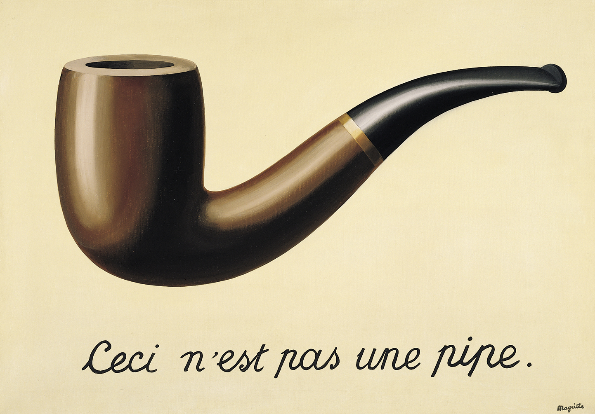

This Is Not A Pipe
The Treachery of the Symbols of Specialness
Confusing Symbols with Source, Form with Content
Part I by Kenneth Wapnick, Ph.D.
Surrealist painter René Magritte's painting “La Trahison des Images” (The Treachery of Images) This is not a pipe. 1928 [1]. In 1929, then thirty years old, Belgian surrealist painter René Magritte completed a painting called La Trahison des Images (The Treachery of Images). It was a painting of a (smoking) pipe, and underneath it Magritte wrote, Ceci n’est pas une pipe (This is not a pipe). The painter, who died in 1967, was making the point that symbols are not reality, retrospectively saying:
The famous pipe. How people reproached me for it! And yet, could you stuff my pipe? No, it’s just a representation, is it not? So if I had written on my picture “This is a pipe,” I’d have been lying!
It is a quick jump for students of A Course in Miracles to see the Platonic influence at work here—the difference between appearance (symbol) and reality (source)—the philosophical tradition within which the Course’s teachings fit so comfortably. Things are not what they appear to be because things are not real. Being mere projections (or extensions) of the mind,they—in fact, everything in the material universe—represent or symbolize in form the decision-making mind’s thoughts of the ego or Holy Spirit. Consider these excerpts from the early workbook lessons that reflect the relationship between our thoughts and perceptions:
No one really sees anything. He sees only his thoughts projected outward.
It seems as if the world determines what you perceive....[but] your thoughts determine the world you see
It is because the thoughts you think you think appear as images that you do not recognize them as nothing. You think you think them, and so you think you see them. This is how your “seeing” was made. This is the function you have given your body’s eyes. It is not seeing. It is image making. It takes the place of seeing, replacing vision with illusions.
Herein lies the treachery of images or symbols, for they seem to be what they are not, seducing us into believing that an illusion (really, an hallucination) is actually true and is out there to be perceived. And so the purpose of the world: “Thus were specifics made”(W-pI.161.3:1). This leaves us as the “face of innocence” that suffers at the hands of people and events beyond our control. All this as if the puppet (the bodily world of images) could affect the puppeteer (the mind)! After all, could one smoke Magritte’s pipe? Only “those made mad by guilt” (T-13. in.2:2) would believe they could, which is why Jesus repeatedly refers to us as insane, for we see and hear (and smoke) what is not there:
What if you recognized this world is an hallucination? What if you really understood you made it up? What if you realized that those who seem to walk about in it, to sin and die, attack and murder and destroy themselves, are wholly unreal?
Indeed, what if? How could we continue to exist as we do, or even attempt to justify this existence through our sensory apparatus that brings us data about what is not there, or believe the body’s brain that analyzes these unreal data and attempts to ascribe meaning to them? Understanding the difference between appearance and reality, we would have recognized the illusory nature of our world’s images, which would clear the way for realizing what the symbols represent: the mind’s choice to remain mired in the guilt-ridden dream of separation or lovingly to awaken from it. We would have seen clearly the world’s murderous treachery for what it is; its belief in sin deftly concealed behind the alluring glitter of the special relationship:
Specialness is the seal of treachery upon the gift of love. Whatever serves its purpose must be given to kill.... And no relationship that holds its purpose dear but clings to murder as safety’s weapon, and the great defender of all illusions from the “threat” of love
The special relationship is content (the mind) and not form (the body), and in this lies its betrayal and trickery. The following incisive passage from the text highlights this aspect of the ego’s plot against God and His Love. It points to formal religions, is more specifically aimed at Christianity, and even more specifically targets a very ritualized Catholicism:
The special relationship is a ritual of form, aimed at raising the form to take the place of God at the expense of content. There is no meaning in the form, and there will never be.... [It is] the sign that form has triumphed over content, and love has lost its meaning
As bodies, we inevitably judge the forms our specialness takes, some of which we even think are salvific. Thus we completely neglect the mind in which is found the only special relationship: the decision-making mind joining with the ego and its thought system of separation, sin, suffering, and attack. The same temptation to confuse mind and body works with forgiveness as well, which is why Jesus cautions us in The Song of Prayer against understanding forgiveness as a process that occurs between bodies (“an earthly frame”):
Forgiveness has a Teacher Who will fail in nothing. Rest a while in this; do not attempt to judge forgiveness, nor to set it in an earthly frame
Judging form is an easy trap to fall into for so many students of A Course in Miracles. For example, they may judge others who indulge in the “specialness” of marriage (or any relationship), participate in the legal system (e.g.,jury duty or law suits), or utilize any form of medicine—traditional or alternative—to alleviate pain or remove symptoms. By so doing, these students make the mistake of level confusion (see T-2.IV.2), in which the power of the mind to choose sin or holiness is projected onto the body, which is judged accordingly. This is why Jesus writes about the insanity of believing that the body—ours or another’s—is the problem, when all along it is the mind that is the source of both problem and answer. What follows is an edited passage that is representative of ones found throughout the text, workbook, and manual, all of which highlight the illusion of believing that the body is actually its own source, self-initiating and independent of the mind that is its source:
It is indeed a senseless point of view to hold responsible for sight a thing [the body] that cannot see, and blame it for the sounds you do not like, although it cannot hear....it has no feeling....you hate it, not for what it is, but for the uses you have made of it.... It sees and acts for you [i.e., the decision-making mind]....it is frail and little by your wish. It seems to punish you, and thus deserve your hatred for the limitations that it brings to you. Yet you have made of it a symbol for the limitations that you want your mind to have and see and keep.... You hate it, yet you think it is your self, and that, without it, would your self be lost
What could be clearer? The problem is never what the body is, feels, thinks, says, or does. Nothing can never be the problem. It is the mind’s belief in the body’s seeming reality that is the single problem, our having reified its nothingness into something. And so it would be patently insane to detest the body for its physical or mental state, feelings, or acts, when it is the mind’s decision for guilt that is the real issue, behind which is our need for self preservation: the ultimate purpose for sustaining belief in the body’s reality. These projections onto the body—forms of special hate and special love—are “the uses [we] have made of it,” their underlying purpose being to protect the ego by proving that it is right and God is wrong.
Yet the simplicity of the problem is concealed behind the various and enticing forms of the special relationship. Readers of these pages may recall my reference in the March 2006 article to a conversation between Sigmund Freud and his teenage daughter Anna as they walked past some beautiful Viennese homes. The father of psychoanalysis said to his child, one day to become a famous psychologist in her own right, imparting what Anna’s biographer characterized as “a mysterious lesson”:
You see those lovely houses with their lovely facades? Things are not necessarily so lovely behind the facades. And so it is with human beings too. Elisabeth Young-Bruehl, Anna Freud: A Biography (Yale University Press, 2008), p. 52.
Things are not necessarily so lovely behind the facades, for things are never what they seem, their external form concealing a sin-laden content we wish to hide, and hide from. Nowhere is this more painfully clear than in the facades of the special love relationship. No greater joy exists in the ego’s world than the feeling of well-being that comes when our special needs are met by the special persons, objects, or substances in our lives, regardless of their multifarious forms. Indeed, these forms are the great betrayers of our faith in this course, and traitors to the hope of ultimately freeing ourselves from the imprisoning chains of the ego’s dreams of separation, guilt, and physical “reality.”
Since time immemorial, special relationships have been incredibly successful because our real attraction to them is not to the body at all, but to the success of the ego’s strategy of making us mindless. Focusing on the body—the peaks and valleys of its pleasures and pains, triumphs and defeats, successes and failures—makes it virtually impossible to recognize this attraction for what it is and remember that we are, and have always been a mind that is continually choosing between the ego and God. In fact, it is for the purpose of obscuring the ego’s underlying purpose of keeping us mindlessly distracted from the real problem that the complex world of symbols, special love and special hate, was made:
How could there be another way to solve a problem that is very simple, but has been obscured by heavy clouds of complication, which were made to keep the problem unresolved?
The “very simple problem” is the mind’s wrong minded decision for perpetual mindlessness, fulfilled by the clouds of our complicated relationships. Yet these are easily removed by the same mind becoming mindful, opening the heretofore closed door so we may choose again. As the workbook says, simply: “One problem, one solution” (W-pI.80.1:5,3:5).
One cannot state often enough the importance of seeing the obfuscating nature of the mindless world of form. Without such understanding, it is far too easy to fall prey to the seductions of the ego’s perceptual world of specifics, which is why we read:
Nothing so blinding as perception of form. For sight of form means understanding has been obscured
We are easily seduced by the ego’s use of pleasure and pain to anchor us in the mindless world of bodies, for this is how we are protected from the truth that patiently awaits our decision to return to the non-specific right mind. It is within the wrong mind that the thought system of sin is firmly ensconced, and made incredibly horrific that we flee to the body for succor and protection. So cleverly devious is the ego that we never remember that the preservation of the mind’s belief in the sin of separation is our central focus, and not the pleasure-seeking and pain avoiding body. The importance of this recognition is reflected in Jesus telling us twice, in successive sections:
While you believe that it [the body] can give you pleasure, you will also believe that it can bring you pain.... It is essential that this relationship be understood, for it is one the ego sees as proof of sin....the inevitable result of equating yourself with the body, which is the invitation to pain....[The body] will share the pain of all illusions, and the illusion of pleasure will be the same as pain
The point here is that pleasure and pain are opposite sides of the same ego coin of making the body real. Since they share that same purpose, they are the same, despite their perceptually convincing differences. As we read:
Pain compels attention, drawing it away from Him [the Holy Spirit] and focusing upon itself. Its purpose is the same as pleasure, for they both are means to make the body real. What shares a common purpose is the same . This is the law of purpose, which unites all those who share in it within itself
The ego’s purpose of concealing from us the vision of truth is underscored by the following passage—similar in meaning to the earlier quoted passages from the workbook—that describes why our eyes “see” the way they do:
These eyes, made not to see, will never see.... What was its maker’s [the ego’s] goal but not to see? For this the body’s eyes are perfect means, but not for seeing. See how the body’s eyes rest on externals and cannot go beyond. Watch how they stop at nothingness, unable to go beyond the form to meaning
And that is the key. The world of form, the perceptual world of specifics, is nothingness. Therefore, when we confuse form and content by making the body’s form into a cause, we are neglecting the fact that only the mind’s content is causative. Jesus reminds us that his “is a course in cause and not effect” (T-21.VII.7:8). Our confusion means that our delusions lead us to actually believe there is a world out there to believe in, and this is a fact because the body tells us so. And so Jesus cautions us:
Remember, then, that neither sign nor symbol should be confused with source [cause], for they must stand for something other than themselves. Their meaning cannot lie in them, but must be sought in what they represent
This confusion of symbol and source (effect and cause) is called level confusion in the early pages of the text, in the context of a discussion of sickness. To the world mired in the dream of bodies, to be told that sickness is of the mind would be judged insane. Yet it is the hallucinating world that is truly insane (T-13.in.2:2) for it sees, feels, and responds to the body that is not the problem, and in fact is not even there:
Sickness...is the result of level confusion, because it always entails the belief that what is amiss on one level [the body] can adversely affect another [the mind]. We have referred to miracles as the means of correcting level confusion, for all mistakes must be corrected at the level on which they occur. Only the mind is capable of error. The body can act wrongly only when it is responding to misthought
Once again we find ourselves in the presence of a very clear statement of this treachery of symbols or forms. The above passage that comes in the very early pages of the text shows us how consistently, right from the beginning, Jesus emphasizes the core of his teaching: we are decision making minds and not bodies. Moreover, this confusion of levels is purposive, for it does not come to us unbidden. Rather, it is the direct result of the mind identifying with the ego, seeking to protect its individual and special self by perpetuating the distorting experience of being without a mind, and therefore being a mind-less body that is “at the mercy of things beyond you, forces you cannot control, and thoughts that come to you against your will” (T-19.IV-D.7:4).
To be sure, specialness is viciously sinister in achieving its goal of betraying love, but a more deviously subtle betrayal is the treachery of words that were “made by separated minds to keep them in the illusion of separation” (M-21.1:7). We now continue to explore, in even greater depth, the ego’s plot to defeat God and ensure the preservation of its dream of separation and death.
The Treachery Continues: Words as Symbols of Symbols
In the manual for teachers, we read:
Let us not forget, however, that words are but symbols of symbols. They are thus twice removed from reality
This statement is actually borrowed from Plato. In his Republic, Socrates (Plato’s mouthpiece in the Dialogues) is having a discussion about this very issue of symbol and source, appearance and reality, using the metaphor of three kinds of beds to illustrate his point:
Well then, here are three beds: one existing in nature, which is made by God.... There is another which is the work of the carpenter .... And the work of the painter is a third.... Beds, then, are of three kinds, and there are three artists who superintend them: God, the maker of the bed, and the painter ....[who is] the imitator of that which the others make....[The painting] is thrice removed...from the truth.
Plato’s point is that the two forms (an actual bed and the painting that depicts it), which purport to represent the truth of the ideal bed, are illusory attempts to capture the essence of reality (God and the ideal bed). As the Course states:
...there is no symbol for totality. Reality is ultimately known without a form, unpictured and unseen
Despite the persuasiveness of concepts and words (the Course’s version of Plato’s metaphor), they are not reality. Again, this was Magritte’s point in his La Trahison des Images, as it was in Plato’s discussion. It is at the core of the Course’s non-dualistic metaphysics, the foundation for its teachings on forgiveness. Since reality is beyond all symbols, its essence of perfect oneness is forever impossible to express in the words and concepts belonging to a separated mind. The ineffability of God means just that, literally: His Being cannot be expressed in dualistic terms, only experienced by a mind freed of the ego, if only for an instant. Recall these words from the workbook:
We say “God is,” and then we cease to speak, for in that knowledge words are meaningless. There are no lips to speak them, and no part of mind sufficiently distinct to feel that it is now aware of something not itself
Similarly, we are told in a later workbook lesson, echoed in a line from the manual for teachers:
Think not He [God] hears the little prayers of those who call on Him with names of idols cherished by the world. They cannot reach Him thus
God does not understand words, for they were made by separated minds to keep them in the illusion of separation
A major theme of A Course in Miracles, and central to its daily practice, is asking the Holy Spirit for help. Yet if God does not understand words or our “little prayers,” it is reasonable to ask what purpose it would serve to appeal to His Voice for help with anything, let alone say the prayers in Part II of the workbook that are addressed directly to God as Father. Here is Jesus’ response to this concern, given in the manual as response to the question, “What Is the Role of Words in Healing?” Incidentally, the word “heart” as used here is synonymous with the separated mind that is always choosing between the ego and Holy Spirit, separation and Atonement. It is that choice—non- specific and beyond words—that the Holy Spirit “hears,” since He looks only to mind/cause and not to body/effect (T-27.VIII.9:1-4):
It is impossible that the prayer of the heart remain unanswered in the perception of the one who asks.... The power of his decision offers it to him as he requests.... His words do not matter. Only the Word of God has any meaning, because it symbolizes that which has no human symbols at all
All this highlights the importance of moving beyond the forms of our words to the content of our thoughts, from the mindless body to the mind that is the sole focus of Jesus’ course. Thus, as an example, students say those prayers in the workbook for themselves, as reminders that it is God they love more than anything the ego’s special- ness has to offer. Moreover, people—not only students of A Course in Miracles—need to be educated to hear the meaning behind words. I frequently remind students to flee as the wind whenever someone says: “I am going to be honest with you and tell you what I think.” Almost always this “honesty” conceals the attack behind the words. True honesty must first be shared with oneself and the Holy Spirit or Jesus (see, for example, T-4.III.8:1-2). Only then can we be truly honest with others, for we will have come from the ego-less love in our right minds. This is the meaning of honesty, one of the characteristics of God’s (advanced) teachers:
Honesty does not apply only to what you say. The term actually means consistency. There is nothing you say that contradicts what you think or do; no thought opposes any other thought; no act belies your word; and no word lacks agreement with another
We strive, then, to be honest with ourselves, allowing the conflict-free thought of love to extend through us in our words and actions, establishing a consistency between thought and word or deed that should always be our goal.
It is imperative that students of A Course in Miracles recognize that the you continually being addressed is— sometimes explicitly, but always implicitly—the decision- making mind. Since we are repeatedly taught by our older brother, as we have seen, that bodies do absolutely nothing except carry out the dictates of the mind, it would be senseless for the message of forgiveness to be given to a body, to the person we think we are who is seemingly reading, thinking about, and practicing what is being taught in the Course’s pages. Because only a body can understand words, which do not exist in the atemporal/nonlocal mind, and we as individuals communicate with words—spoken and written, in the “real” world or cyber- world—our very words and concepts must reinforce the illusion that the separation is alive and well, and ever pres- ent. This situation cannot be changed until we first become aware of the true nature of the ego’s plot to sub- vert the mind from exercising its power to change itself and correct its mistake. In Part II of this article we shall return to this central theme as it relates specifically to A Course in Miracles: moving beyond its symbolic words to the content, hearing the melos or true message in between the written words.
As we do not know we have a mind, let alone one that has the capacity to choose, we need a means whereby we can gain access to the internal decision maker that decides and controls our destiny. Enter the right-minded use of symbols, for it remains true within the dream that words, however illusory, can yet reflect a purpose different from separation. They can point us to the love that is beyond duality, the love that the symbolic figure of Jesus so lov- ingly represents for us, correcting our mistaken choices:
The name of Jesus Christ as such is but a symbol. But it stands for love that is not of this world. It is a symbol that is safely used as a replacement for the many names of all the gods to which you pray. It becomes the shining symbol for the Word of God, so close to what it stands for that the little space between the two is lost, the moment that the name is called to mind
Therefore we need symbols to help us along the jour- ney to the reality beyond all journeys, symbols that will gently correct the symbols of fear the ego has thrown in our path to derail us as we make our way home.
Symbols as the Way Back to Our Source: Our Special Function of Forgiving the Traitor
Such is the Holy Spirit’s kind perception of special- ness; His use of what you made, to heal instead of harm. To each He gives a special function in salvation he alone can fill; a part for only him
This special function must never be confused with form or behavior, a confusion that is one of the ego’s favorite lines of defense. Falling prey to this web of specialness reflects our unending homage to the ego’s first law of chaos: there is a hierarchy of illusions (T-23.II.2:3). This foundational principle of its thought system of separation means—among other things—that some forms of behaviors, professions, or activities are more important and holier than others. Yet in every aspect of the teachings of A Course in Miracles, Jesus is clearly referring to the mind, and specifically in the above passage to the mind’s single function of forgiveness: the decision maker choosing the Teacher of Atonement by saying no to the teacher of separation (T-21.VII.12:4).
This process of negating the ego’s negation of truth goes to the very heart of the Course process of healing, and is a crucial theme that runs throughout its three books. It is also an extension of the philosophy of learning (anamnesis) that Plato learned from his teacher Socrates; namely, we learn by first learning that we do not know2 2. When Socrates was informed that the Delphic oracle had proclaimed him the wisest man in Athens, he replied that if this were so, it was only because he knew that he did not know. This frees us to choose against the ego, which removes the blocks to the awareness of love’s presence (T-in.1:7). And so we read in the text:
The task of the miracle worker thus becomes to deny the denial of truth
Your task is not to seek for love, but merely to seek and find all of the barriers within yourself that you have built against it. It is not necessary to seek for what is true, but it is necessary to seek for what is false
From the workbook, in the context of learning to distinguish the meaningful from the meaningless:
If you could accept the world as meaningless and let the truth be written upon it for you, it would make you indescribably happy. But because it is meaningless, you are impelled to write upon it what you would have it be.... Beneath your words is written the Word of God. The truth upsets you now, but when your words have been erased, you will see His
Our learning, therefore, consists of undoing the ego’s thought system of illusions. Once these are removed, we are able to remember the truth of our Self that was, and is always there, and which has awaited our return to It by the mind’s decision to choose against the false self.
To guard against falling victim to the ego’s seductions that would lure us into its world of specialness, we need only remember that “the sole responsibility of the miracle worker is to accept the Atonement for himself” (T-2.V.5:1), and it is the mind alone that refuses or accepts the Holy Spirit’s gift of salvation. We need to be reminded that “this is a course in cause [mind] and not effect [bodyor behavior]” (T-21.VII.7:8), and that the Holy Spirit isnot concerned with effects, but only with their cause.Daily reminders of this liberating fact keep us on the Course’s straight and narrow path, helping us avoid the snare of mistaking the body’s effects for the causative mind.
As the ego speaks first and is always wrong (T-5.VI.3:5–4:2), our inner Teacher uses the ego’s symbols of guilt and attack, translating them into learning opportunities. Given the immensity of our fear of the non-specific, we are taught through this reinterpretation of the ego’s specific symbols that were made to harm, that love is only kind and merciful, not punitive and merciless. The principle underlying this indirect form of learning (T-14.I.2-5) is enunciated in the following passage from Lesson 184:
You have need to use the symbols of the world a while. But be you not deceived by them as well.... They become but means by which you can communicate in ways the world can understand but which you recog- nize is not the unity where true communication can be found
As we move beyond the symbols to their source, we are able to move beyond our judgments of behavior— words and deeds—to the Holy Spirit’s single judgment: people either express love or call for it; either way, our response is always kind and loving (T-14.X.6-7). This enables us to see everything and everyone in the world, without exception, as inviting us to be loving and kind. We have journeyed far, far beyond taking the illusory ego seri- ously, having remembered at last to laugh at the thought that the “tiny, mad idea” of separation was sinful, along with any of its fragmentary derivatives of guilt and attack, judgment and pain (T-27.VIII.6:2). In the end, the ego’s puny weakness can be likened to the silly image of a frightened mouse that seeks to attack the universe (T-22. V.4). And who except the insane could ever justify a serious response to such a laughable thought system that not only denies the reality of our Source, but believes it has successfully accomplished the impossible act of separat- ing from Its perfect Oneness?
In this vein, our wise and loving brother asks us to remember our roots in God and to forswear the ego’s lies and stories, choosing the truth of Heaven’s magnitude over the world’s illusions of littleness:
Walk you in glory, with your head held high, and fear no evil.... Let not the little interferers pull you to littleness.... Think what a happy world you walk, with truth beside you! Do not give up this world of freedom for a little sigh of seeming sin, nor for a tiny stirring of guilt’s attraction. Would you, for all these meaningless distractions, lay Heaven aside?
Following Jesus’ simple teachings that call us to make the simple choice for truth, we no longer seek to change the world with its symbols of self-hate and hate (the “little interferers”), but focus only on changing how our mind sees these symbols (T-21.in.1:7). We forgive the traitor by realizing that it did nothing to change our eternal state as God’s one Son: healed, whole, and united with his Creator, for not one discordant note of specialness caused Heaven’s song of Oneness and Love to be diminished (T-26.V.5:4). The world, which once had been a traitorous nemesis, has become a gentle companion in our classroom of learning: “No longer is the world our enemy, for we have chosen that we be its friend” (W-pI.194.9:6).
We have finally listened to our gentle teacher’s gentle teachings, and learned that there is no need to blame “the slings and arrows of outrageous fortune” (Hamlet) that have seemingly plagued us, for “the fault...is not in our stars, but in ourselves, that we are underlings” (Cassius in Julius Caesar). In other words, the fact that we, as “underlings,” feel the inadequacy that is inevitable in the ego’s inner and outer worlds of scarcity and lack is based only on our mind’s decision to feel that way, and cannot be attributed to any external agent. The world of separation and specialness, suffering and death, is the mere effect of a cause that is found in the mind, and nowhere else. And where it is, there it can be changed, as we have withdrawn our projections and brought them back to their source in the mind, where we have so happily chosen again.
Our acceptance of this joyous truth of salvation is the special function of which Jesus spoke. It is the core of the Course’s curriculum: “The secret of salvation is but this: that you are doing this unto yourself” (T-27.VIII.10:1). As the early workbook lessons instruct, extending the implications found in the passages we cited at the beginning of the article, we as decision-making minds have given the world’s symbols all the meaning that they have. Now that we have chosen the teacher who reflects Heaven’s Meaning, we have understood forgiveness to be erasing the meaning our perceived bodies gave to the world. This is what allows the Meaning beyond all symbols to merely be, the aforementioned Word of God that takes the place of our little words. We give thanks that sanity has returned to replace the madness of guilt and hate. The insanity in believing we could actually choose against God, in the ego’s “past” or “present,”has softly disappeared into the sheer majesty of the power of the truth and love that created us and that we are:
Forgiveness vanishes and symbols fade, and noth- ing that the eyes have ever seen or ears have heard remains to be perceived. A power wholly limitless has come, not to destroy, but to receive its own.... You do not know the peace of power that opposes nothing. Yet no other kind can be at all. Give welcome to the power beyond forgiveness, and beyond the world of symbols and of limitations. He [God] would merely be, and so He merely is.
**********
The foregoing having being said, a serious problem still remains for students of A Course in Miracles, a problem that seems to be built into the Course itself. It should go without saying that the problem I speak of is not inherent in A Course in Miracles, but in its students’ relationship to it. To reverse the quotation cited above, what the Holy Spirit uses to heal, the ego will turn to harm. Part II of this article (December 2013) will examine in greater depth the actual nature of the problem that, paradoxically, is found in the form in which the Course has come to us: the printed (or cyber) word, and the failure of students to use the specific words and concepts—all part of the dual- istic world—to reach the wordlessness of love’s nondualistic oneness that is the Course’s true message, its unwritten doctrine. ♥